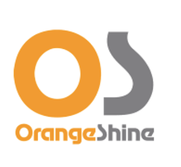
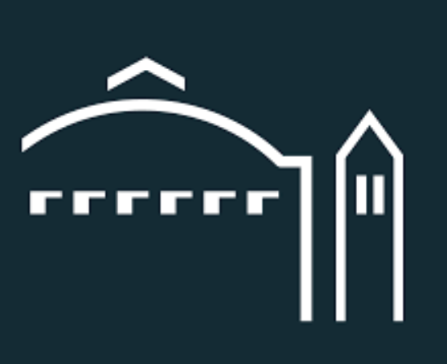
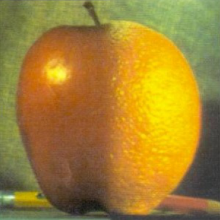
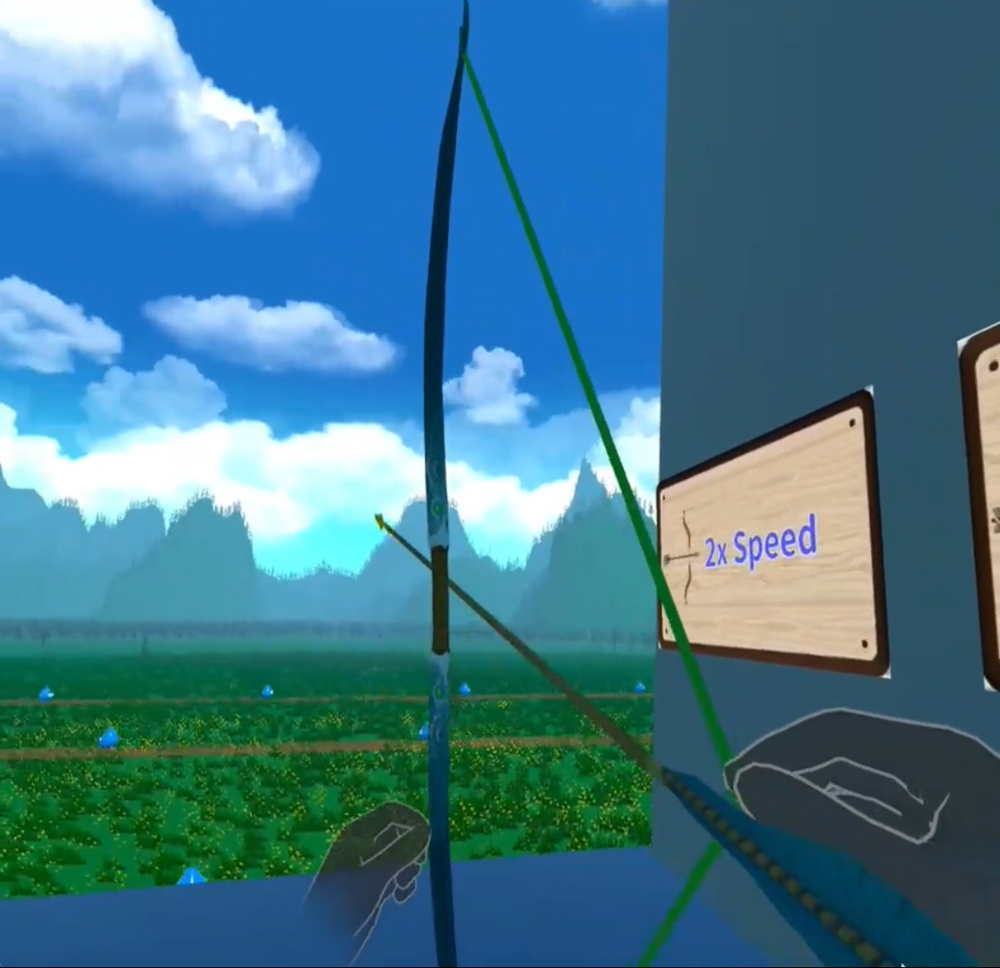
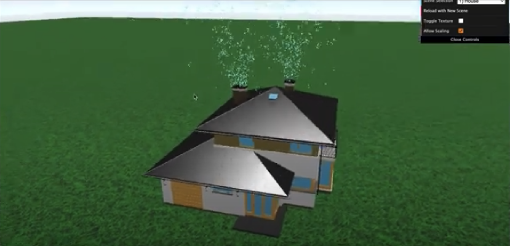
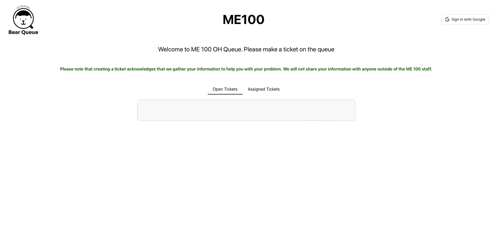
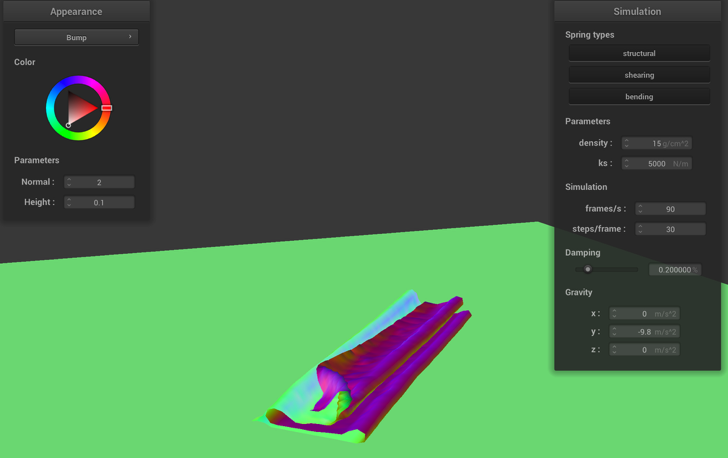
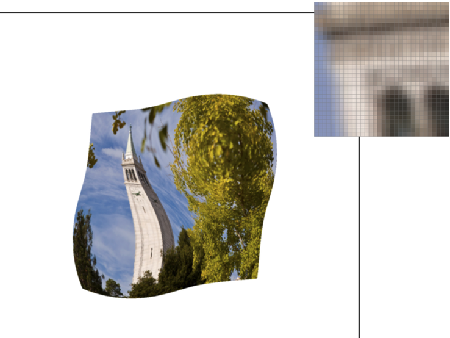
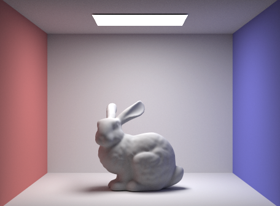
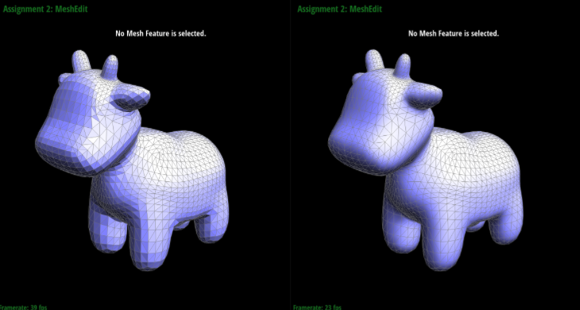

My background is in diverse in computer sceince such as engineering, mixed reality (MR) development, and research, with experience in leading projects and collaborating with cross-functional teams.

My Background / About Me
Industry Experience
Snap Inc.
During my externship with Snap Inc., I collaborated closely with the AR development team to create an augmented reality (AR) lens using Snap's Lens Studio software. I conducted data-driven market analysis focusing on the entertainment, sports, and tech sectors to identify opportunities for impactful AR experiences. Additionally, I tested and optimized these AR experiences to ensure they performed optimally across various devices and platforms.

OrangeShine
As a Software Engineering Intern at OrangeShine, I implemented prefetching and indexing strategies using Python and Django, which resulted in up to a 40% improvement in page response times for certain web pages and significantly reduced server load. I developed over five Django-based web applications, utilizing REST APIs for vendors to manage and edit shipment box sizes, with integrated data validation that captured user inputs and synchronized them with a cloud-based SQL database. Furthermore, I played a critical role in upgrading Python and Django across 10+ company applications, modifying existing codebases to align with the latest software versions, thereby enhancing security and performance.
Boram Cooperation
In my role as a Software Engineering Intern at Boram Cooperation, I implemented and developed a responsive design framework using Bootstrap, which optimized cross-platform compatibility and performance across desktop, mobile, and tablet devices. This work significantly enhanced user accessibility and interaction. The improvements led to a 25% increase in user satisfaction based on internal reviews, and the revamped website was well-received by staff, ultimately boosting the company’s online presence and accessibility.
Research Experience
EECS DOP at UC Berkeley
Advised by Prof. Sanjit Seshia, Postdoc Edward Kim
I am currently leading one of the group in a research project at the EECS DOP at UC Berkeley, focusing on home-based Mixed Reality Stroke Rehabilitation in collaboration with UCSF and Stanford. In my role, I lead a team of 8 undergraduates to develop a comprehensive MR stroke rehabilitation application for Meta Quest 3. I have implemented several key features, including the creation of training scenarios, recording trajectory points, processing data with Dynamic Time Warping (DTW), and building a network pipeline using ZMQ to transmit patient data and task information to a server. Additionally, I designed and implemented personalized algorithms tailored to patients' range of motion, creating progressively challenging tasks that adapt as patients improve. My work is grounded in thorough literature reviews, ensuring innovation and avoiding redundancy throughout the development process.

Berkeley Lab (LBNL)
Advised by Dr. Waqas Khalid
During my time as an Undergraduate Research Assistant at Lawrence Berkeley National Laboratory, I played a pivotal role in designing an e-beam lithography system using nanotubes, with a focus on cost-effective solutions and improved efficiency. I advanced the development of a lithography simulator by incorporating pathfinding algorithms that increased operational speed by 30%. Additionally, I was involved in testing and evaluating the performance of shooting electrons through nanotubes, utilizing a motor capable of micrometer precision. This fine-tuning of the motor's positioning significantly enhanced the accuracy of the process.
Projects



Imaging Processing: Filters and Frequencies
or this project, I explored the use of Gaussian filters and frequency-based operations on images. The primary focus was applying 2D convolution and filters to manipulate images and visualize their effects. The project involved using Gaussian and Laplacian stacks to better understand how these filters operate across different frequency levels.
The first part of the project was about applying finite difference operators to images. I used the partial derivatives in the x and y directions to extract edges. After computing the gradient magnitude from the convolved images, I applied thresholding to binarize the result, enhancing the visibility of the edges. To improve the quality of edge detection, I explored the Derivative of Gaussian (DoG) filter, which combined Gaussian smoothing with the finite difference operator, reducing noise while maintaining sharpness in the edges.
Next, I explored image sharpening using the unsharp masking technique. This process involved enhancing the edges by subtracting the blurred image from the original and adding back an amplified version of the edges. The results showed improved clarity, especially around high-frequency details, such as sharp edges in the images.
I also experimented with hybrid images, where low-pass and high-pass images were combined to create optical illusions. For example, the combination of a low-pass filtered "smile" image and a high-pass filtered "frown" image created a hybrid image that changed its appearance based on the viewer’s distance.
Lastly, I generated Gaussian and Laplacian stacks of different images, blending two distinct images, such as an apple and an orange, across different resolution levels to form a single, visually coherent "Orapple" image.
Imaging Processing: Colorizing
In this project, I worked on colorizing the Prokudin-Gorskii photo collection by aligning and combining three separate color channel images—Blue, Green, and Red—into a cohesive RGB photograph. My goal was to restore these historical images to their original form by achieving precise alignment.
To accomplish this, I used the Sum of Squared Differences (SSD) method to minimize pixel-by-pixel differences between the color channels, which allowed me to achieve accurate image alignment. I also implemented additional techniques such as automatic cropping and edge detection to further enhance the alignment process. The automatic cropping involved analyzing the gradient of each channel to identify and remove insignificant areas that could mislead alignment. For edge detection, I emphasized areas with high gradients, making it easier to detect and align edges accurately.
To optimize the search for the best alignment, I utilized a multi-scale pyramid approach. This technique involved progressively blurring and downsampling the image, reducing computational load and improving runtime, especially for large .TIF files.
By combining these methods—SSD, automatic cropping, and edge detection—I was able to achieve precise alignment and sharp colorization of the photographs. The final sequence of applying automatic cropping, followed by edge detection, and then SSD, minimized errors and produced a visually accurate result.

Hand of the Archer
I developed an immersive VR archery game using Unity and Meta Quest 3, incorporating advanced hand tracking technology to enhance player interaction. In the game, players use hand gestures to control bows and arrows, aiming to defeat monsters that spawn in waves. As the game progresses, each round introduces new challenges by providing stronger powers, such as increased damage and faster arrow speeds, making the gameplay increasingly complex and engaging. This project demonstrates my ability to integrate cutting-edge VR technologies with dynamic game mechanics to create a highly interactive and responsive gaming experience.

Smoke Simulator
For this project, I developed a smoke simulator using Three.js, a JavaScript library for 3D rendering. My goal was to explore physical simulations by implementing the Navier-Stokes equations to realistically simulate the behavior of smoke. I focused on creating an interactive and visually appealing simulation that could be rendered in a 3D environment.
To achieve this, I simulated smoke by converting particles into a density field and calculating their positions and velocities, incorporating pressure, viscosity, and buoyancy forces to mimic the natural movement of smoke. To visualize the smoke, I used a sprite sheet of 30 cells, which created an animated effect that made the particles appear realistic. I programmed the particles to always face the camera, ensuring a consistent visual experience.
The simulator included various scenes, such as a house with smoke emerging from chimneys, where I added collision detection and dynamic opacity, allowing the smoke to interact naturally with the environment. I extensively used Three.js for rendering and animating the 3D scenes, with JavaScript driving the simulation logic and integrating it with the Three.js framework.

BearQueue
At Berkeley, I noticed that the high student-to-faculty ratio led to long waits during office hours, leaving students feeling unsupported and staff frustrated. Recognizing this as an opportunity to improve both student and faculty experiences, I took the initiative to develop a web application to reorganize the office hour process. Understanding that this task would require significant effort, I recruited and led a team of five people to design and implement the application using React for the front end, Java Spring Boot for the back end, and MongoDB for the database.
The application allowed students to submit their questions online beforehand, enabling faculty to manage the queue digitally and preview questions in advance. This system eliminated the need for physical sign-up boards, which often resulted in names being erased or overlooked.
The result was a significant improvement in the office hour experience. The application reduced incidents of mismanagement, allowed staff to assist more students effectively, and encouraged students to formulate their questions more thoughtfully. Feedback was overwhelmingly positive, with 80% of users—both students and staff—expressing their desire to continue using the application. For this project, my team used React, Java Spring Boot, and MongoDB

Cloth Simulation
This project explores the physics-based simulation of cloth and its interaction with other objects and gravity, alongside the implementation of custom shaders for realistic rendering. The project begins with creating a mass-spring system that forms the cloth structure, connecting points with springs of different types—structural, shearing, and bending. Various physical properties such as spring constant (ks), density, and damping are tested to observe their effects on cloth behavior.
Next, the simulation incorporates collision handling with other objects like spheres and planes, adjusting the cloth's response based on its interaction with these surfaces. The implementation also includes self-collision detection, where a spatial map is used to prevent the cloth from intersecting with itself, enhancing realism.

Rasterizer
In this project, I implemented various sampling techniques to create a rasterizer that processes SVG files and adjusts how images are projected on the screen. The project involved several tasks, beginning with rasterizing single-color triangles using basic sampling, where I encountered and resolved issues with boundary conditions and speed optimization. I then implemented antialiasing through supersampling, enhancing image quality by averaging multiple sample points within each pixel. This required modifying the sample buffer and resolving issues with indexing and resizing.
Next, I worked on geometric transformations, including translation, scaling, and rotation, ensuring the correct application of these transformations to 2D objects. I also applied barycentric coordinates for smooth color interpolation across triangles, which significantly improved visual transitions in the rendered images.
For texture mapping, I implemented pixel sampling methods, including nearest neighbor and bilinear interpolation, to determine pixel colors within textured triangles. This required understanding and applying texture coordinates, leading to smoother and more accurate texture representations. I also explored level sampling with mipmaps, optimizing texture detail based on screen resolution, and implemented both nearest and linear level sampling techniques.

Ray Tracing and Global Illumination in 3D Rendering
This project involves rendering 3D models and lighting, focusing on ray generation, scene intersection, and various illumination techniques.
In Part 1, we simulate a camera by generating rays that are used to detect intersections with objects in a scene. We implement ray-triangle and ray-sphere intersection functions using the Moller-Trumbore algorithm for efficient detection.
Part 2 introduces the Bounding Volume Hierarchy (BVH) to optimize rendering by reducing the runtime complexity from O(N) to O(log N). We construct a BVH tree using a spatial median heuristic and implement intersection detection with bounding boxes and BVHs. The BVH significantly improves rendering speed, especially for complex scenes.
Part 3 focuses on direct illumination, where we implement hemisphere and importance sampling techniques. Importance sampling is found to produce less noise and better shadow quality compared to hemisphere sampling.
In Part 4, we explore global illumination using the Russian Roulette technique and recursive ray tracing to simulate multiple light bounces. We analyze the impact of varying bounce counts on the rendered images, noting that beyond a certain number of bounces, additional light contributions become negligible.
Finally, Part 5 introduces adaptive sampling to reduce noise in Monte Carlo path tracing. By dynamically adjusting the number of samples based on the scene’s importance, we achieve better image quality without excessively increasing the number of samples.

Advanced 3D Graphics and Surface Rendering
In this project, I explored the implementation of curves and surfaces using various algorithms and techniques within a graphic renderer and 3D rasterizer. I began with Bézier curves, utilizing the de Casteljau Subdivision Algorithm to smooth out lines and generate curves. This involved implementing the BezierCurve::evaluateStep() function to iteratively create smooth Bézier curves. I extended this to Bézier surfaces using the Separable 1D de Casteljau method, modifying BezierPatch functions to evaluate 3D surfaces and render complex models like teapots and cubes.
Next, I focused on shading techniques, specifically Phong shading, by implementing area-weighted vertex normals. This required modifying the Vertex::normal() function to calculate smooth normals across surfaces, significantly improving the visual quality of the rendered models.
I then implemented edge operations such as edge flipping and splitting, which involved modifying HalfedgeMesh::flipEdge() and HalfedgeMesh::splitEdge() functions. These operations allowed me to manipulate mesh structures, creating new triangles and altering existing ones to refine the model's geometry.
Finally, I implemented Loop Subdivision for mesh upsampling in the MeshResampler::upsample function. This technique involved iterating through mesh vertices and edges, calculating new positions, and refining the mesh's resolution. The result was smoother, more detailed models with improved geometric accuracy. I also explored pre-processing techniques to maintain symmetry during subdivision, which helped preserve the original shape's integrity.
Ants vs Bees
In the "Ants vs. SomeBees" project, I developed a tower defense game inspired by Plants vs. Zombies using object-oriented programming principles. The game centers around strategically placing different types of ants to defend a colony from invading bees. The project was an application of concepts from Composing Programs, particularly focusing on object-oriented design, inheritance, and encapsulation.
The project was divided into three phases. In Phase 1, I implemented basic gameplay, introducing two main ant types: HarvesterAnt, which collects food, and ThrowerAnt, which attacks bees. Phase 2 added complexity with specialized ants like LongThrower and ShortThrower, each with unique attack ranges. I also implemented defensive ants such as FireAnt, which deals damage when attacked, and WallAnt, which serves as a barrier. Additionally, I developed more complex mechanics, such as the HungryAnt that eats bees whole and the BodyguardAnt that protects other ants.
In Phase 3, I introduced new environmental elements, including water, which only certain ants could survive, and the QueenAnt, which doubles the damage of all ants behind her. This phase required significant modification and extension of core classes like Ant, Bee, Place, and GameState. I ensured that the game logic was sound and thoroughly tested using both the provided autograder and interactive gameplay.